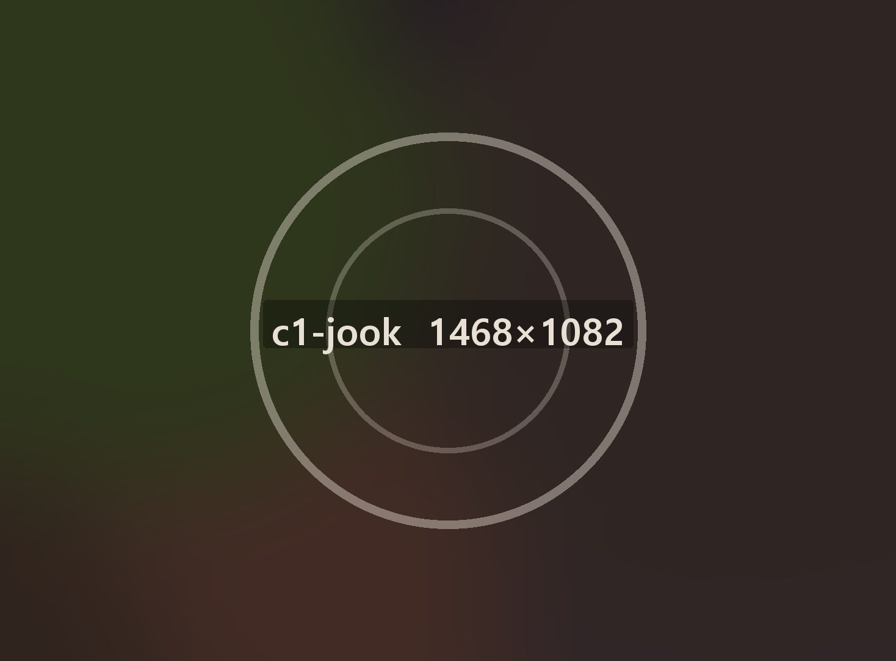
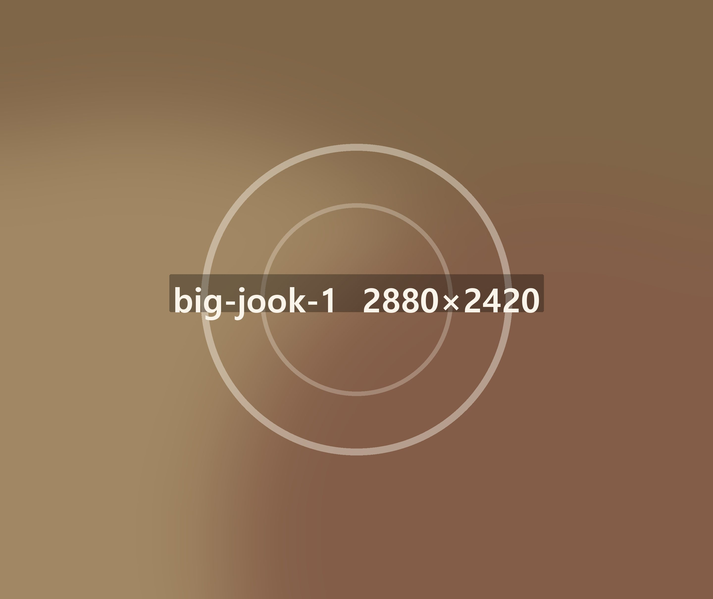
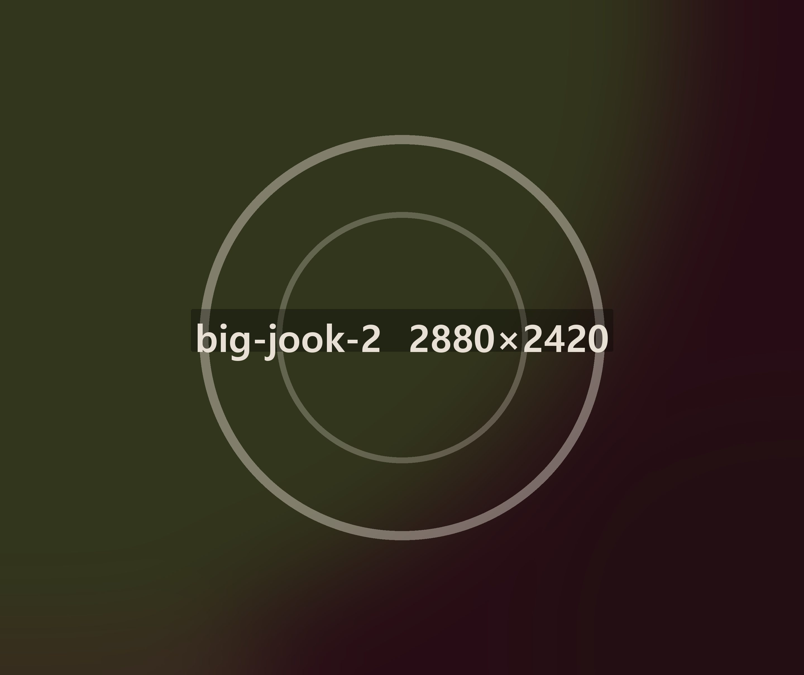
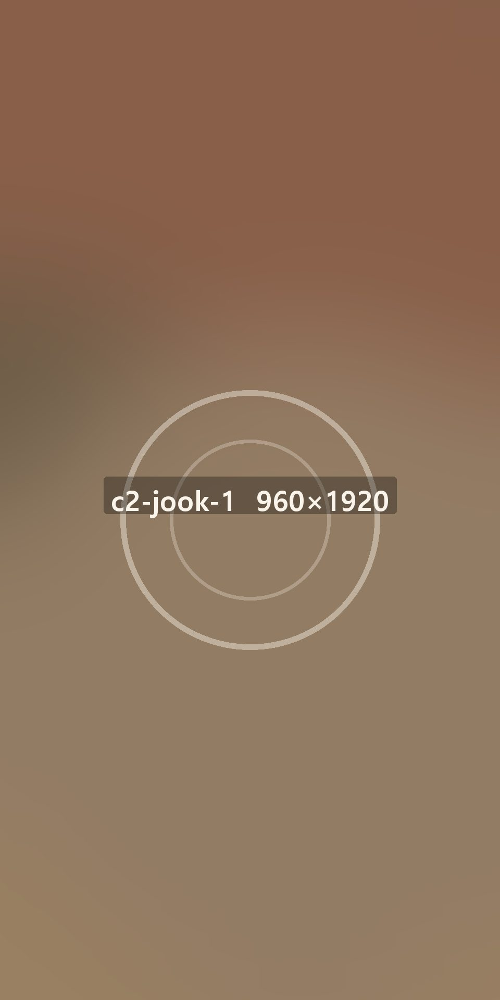
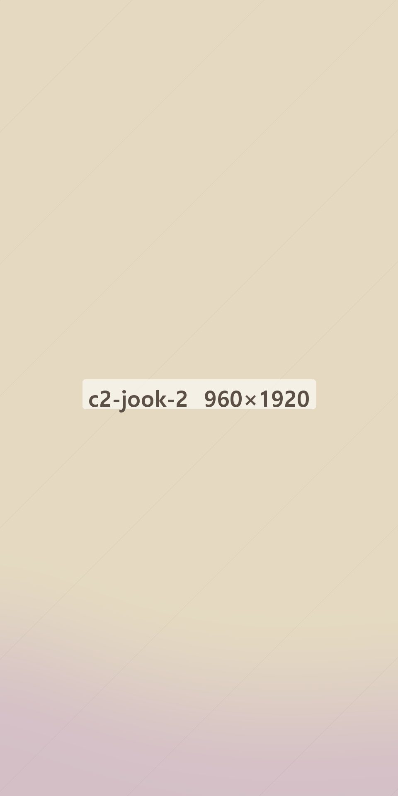
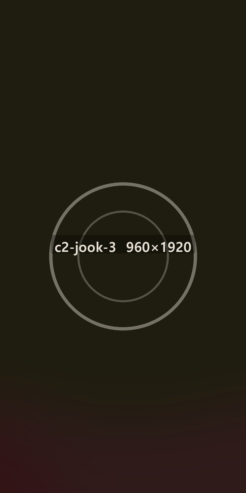

죽 전문 · 2003년 시작 · 전국 1,860곳


가장 속 편한 한 끼,
온죽
쌀은 두 시간 불리고, 불 위에서 40분을 젓습니다. 그래서 점심때 끓인 죽은 점심에 다 나갑니다.

전복은 껍데기째
들어옵니다
내장을 따로 발라 죽에 풀어 넣습니다. 초록빛이 도는 건 그 때문입니다.

매일 아침 불리는
쌀 두 시간문 열기 두 시간 전에 쌀부터 불립니다.

한 솥씩 따로 끓이는
죽 32가지재료가 섞이지 않게 솥을 나눕니다.

그날 담그는
겉절이죽 옆에 나가는 김치는 그날 아침 담급니다.
다채롭고 속 편한 한 그릇
- 서른두 가지전복·소고기·버섯·단호박·들깨·낙지까지 서른두 가지를 냅니다.
- 1인분씩주문이 들어오면 1인분 솥에 덜어 다시 데웁니다.
- 간은 마지막에소금은 손님 앞에 나가기 직전에 넣습니다.
- 포장도 같은 그릇포장 용기에 담아도 40분은 따뜻합니다.
한 사람만을 위한, 정성
- 어르신 상죽·반찬·물김치를 한 쟁반에 담아 냅니다.
- 산모식미역과 들깨를 같이 쑨 죽을 따로 둡니다.
- 아이 메뉴간을 절반으로 줄인 아이용 죽이 있습니다.
- 병원 근처 매장병원 앞 매장은 오전 7시에 엽니다.